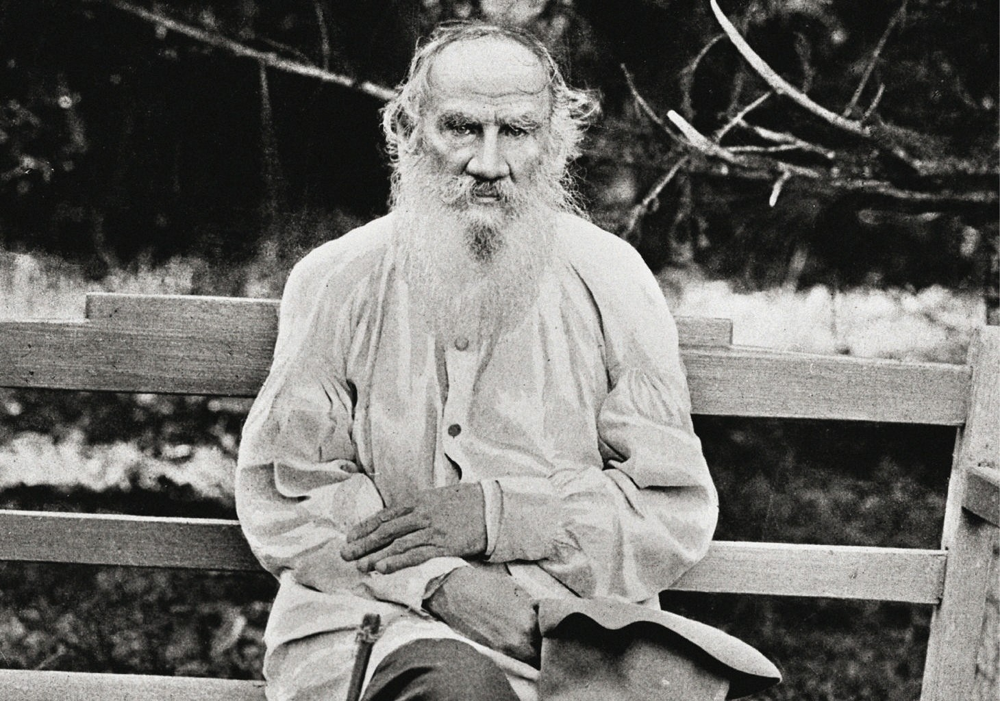

Граф Лев Никола́евич Толсто́й (28 августа [9 сентября] 1828, Ясная Поляна,
Тульская губерния, Российская империя — 7 [20] ноября 1910, станция Астапово,
Рязанская губерния, Российская империя) — один из наиболее известных русских писателей и мыслителей,
один из величайших в мире писателей-романистов.
Участник обороны СевастополяПерейти к разделу «#Военная служба». Просветитель, публицист, религиозный мыслитель,
его авторитетное мнение послужило причиной возникновения нового религиозно-нравственного течения — толстовстваПерейти к разделу
«#Философия». За свои взгляды был отлучён от РПЦ. Член-корреспондент Императорской Академии наук (1873), почётный академик
по разряду изящной словесности (1900)[5]. Был номинирован на Нобелевскую премию по литературе (1902, 1903, 1904, 1905).
Впоследствии отказался от дальнейших номинаций. Классик мировой литературы.
Писатель, ещё при жизни признанный главой русской литературы[6]. Творчество Льва Толстого ознаменовало новый этап в русском
и мировом реализме, выступив мостом между классическим романом XIX века и литературой XX века. Лев Толстой оказал сильное
влияние на эволюцию европейского гуманизма, а также на развитие реалистических традиций в мировой литературе.
Произведения Льва Толстого многократно экранизировались и инсценировались; его пьесы ставились на сценах всего мира
. Лев Толстой был самым издаваемым в СССР писателем за 1918—1986 годы: общий тираж 3199 изданий составил 436,261 млн экземпляров.
Наиболее известны такие произведения Толстого, как романы «Война и мир», «Анна Каренина», «Воскресение»;
автобиографическая трилогия «Детство», «Отрочество», «Юность»; повести «Казаки», «Смерть Ивана Ильича»,
«Крейцерова соната», «Отец Сергий», «Хаджи-Мурат»; цикл очерков «Севастопольские рассказы»; драмы «Живой труп»,
«Плоды просвещения» и «Власть тьмы»; автобиографические религиозно-философские произведения «Исповедь» и «В чём моя вера?»,
антивоенные произведения «Царство Божие внутри вас», «Одумайтесь!», «Закон насилия и закон любви» и др.

Лев Николаевич Толстой (1828-1910)
Главные герои
Андрей Болконский – князь, сын Николая Болконского. В начале романа ему 27 лет.
Муж и вдовец княгини Лизы, отец Николеньки. Брат Марьи. Жених Наташи Ростовой. Адъютант Кутузова,
полковник, командир Егерского полка. Участник Шенграбенского боя, герой Аустерлицкого и Бородинского сражений.
При Бородино был ранен и позднее умер в возрасте 34 лет.
Наташа Ростова – дочь графа и графини Ростовых, сестра Николая, Веры и Пети. В начале романа ей 13 лет,
к финалу – около 28 лет. Ее детская любовь Борис Друбецкой. Невеста Андрея Болконского. Жена Пьера Безухова, мать 4 детей.
Пьер (Петр) Безухов – граф, сын богача Кирилла Безухова. С 10 до 20 лет жил во Франции.
Муж и вдовец Элен Курагиной. Муж Наташи Ростовой, отец 4 детей. Масон, благотворитель, очевидец Бородинского сражения,
военнопленный, основатель тайного общества.
Николай Ростов – старший сын графа и графини Ростовых. В начале романа ему около 20 лет. Гусар,
командир эскадрона. Участник Шенграбенского, Аустерлицкого сражений, боя под Островно. Его первая любовь – Соня.
Муж княжны Марьи Болконской, отец 4 детей, в отставке – хороший помещик.
Петя Ростов – граф, младший сын Ростовых. В начале романа ему 9 лет. Идет добровольцем на войну. Участник боя под Вязьмой.
Погиб в 16 лет в составе группы партизан.
Илья Ростов – граф, муж Натальи Ростовой, родной отец Николая, Веры, Наташи и Пети, приемный
– Сони. Глава дружной любящей семьи, патриот, монархист.
Наталья Ростова (Шиншина) – графиня, жена Ильи Ростова, мать Николая, Веры, Наташи и Пети. Пережила смерть Пети, мужа, разорение.
Николай Болконский – князь, отец Андрея и Марьи. Генерал-аншеф в отставке, друг Кутузова, глава местного ополчения.
Содержание
Санкт-Петербург, июнь 1805 года. Европу завоёвывала французская армия. В России французского императора называли антихристом и собирались сражаться с ним в союзе с Австрией.
В это время из-за болезни отца в Россию вернулся Пьер Безухов и сразу попал под влияние своего дальнего родственника и его беспутного сына. Французский император был кумиром Пьера.
Из-за участия в очередной выходке приятеля, Пьера выслали из Петербурга. Он вернулся к отцу в Москву и застал его умирающим. Родственник Пьера, тоже претендовавший на наследство, попытался уничтожить завещание, но его план провалился. После смерти отца Пьер стал одним из богатейших людей России.
Друг Пьера, князь Андрей Болконский, недавно женился, но успел разлюбить жену, разочароваться в жизни. Оставив беременную жену на попечение деспотичного отца и сестры, князь Андрей отправился в Европу воевать, мечтая о славе и военной карьере как у французского императора, которого считал гением.
Он сталь адъютантом Кутузова, участвовал в боях. Жена начала изменять Пьеру Безухову. Он вызвал одного из её любовников на дуэль и тяжело ранил его. После этого Пьер разъехался с женой, отдав ей половину своего состояния.
Пьер не знал, как ему жить дальше, когда познакомился с известным в России масоном и под его влиянием вступил в масонскую ложу.
Князь Андрей долго считался без вести пропавшим. Домой он вернулся, когда у его жены начались роды. Женщина умерла, родив сына. Ранение и смерть жены негативно повлияли на князя Андрея, он больше не верил, что может быть счастлив.
Возрождение князя началось с разговора с Пьером о добре и зле, любви к ближнему и самопожертвовании, и встречи с Наташей Ростовой. Он начал бурную общественную деятельность, но разочаровался и в ней. Пьер же вскоре помирился с женой, разочаровался в масонстве и переехал в Москву, где начал вести разгульную жизнь.
В январе 1812 года в Петербурге состоялся первый бал Наташи. Присутствующий там князь Андрей влюбился в неё и решил жениться, но его отец был против этого брака и настоял, чтобы сын на год уехал в Европу.
Семье Ростовых был выгоден этот брак, поскольку из-за карточных долгов Николая Ростова они попали в трудное положение.
Когда французы подошли к их поместью, у старика случился инсульт. Княжна Марья перевезла его в поместье брата. Там старик умер, а княжна не смогла уехать из-за взбунтовавшихся крестьян. Спас её проезжавший мимо Ростов, в которого княжна сразу влюбилась.
Русские войска отступали, пока император не назначил верховным главнокомандующим Кутузова. Отступление закончилось под Москвой, где Кутузов дал французам решающее сражение — Бородинскую битву.
Во время Бородинской битвы Пьер оказался в самом эпицентре и чудом выжил. Князь Андрей был тяжело ранен. На перевязочном пункте он увидел, как негодяю-соблазнителю ампутировали ногу.
После Бородино русские войска оставили Москву. Раненный князь Андрей попал в дом Наташи и уехал из Москвы в одном с ней обозе. Узнав об этом, девушка пришла к нему. Влюблённые помирились, и Наташа стала ухаживать за князем.
Пьер остался в оккупированной французами Москве. Вскоре начались пожары. На одном из них Пьер заступился за девушку, к которой пристали французские мародёры, и его арестовали, приняв за поджигателя.